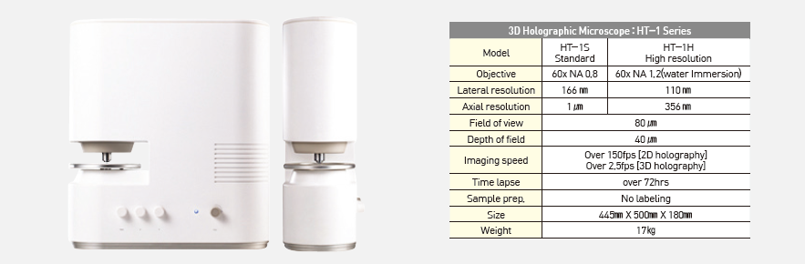

Report by Subjects
Report by Subjects
KAIST RESEARCH ACHIEVEMENTS
Commercialization of 3D holographic microscopy
Department of Physics Yong K. Park
Summary
In life science and medical research, the ability to measure three-dimensional images of cells is essential. However, since existing techniques use fluorescent proteins or staining procedures, it is difficult to observe live cells, especially immune cells or stem cells, which can be re-injected into the body. We apply the principle of CT imaging at the microscopic level using a laser based on digital holography technology. This makes it possible to measure 3D images of cells and observe the inside of cells without having to rely on staining.
R&D Report
We use digital holography technology to apply the principle of CT imaging at the microscopic level. This allows us to measure 3D images of cells and observe the inside of cells without the need for a dying process. We use digital holography technology to apply the Measuring 3D images of cells is essential in life science and medical research. However, it is difficult to observe live cells due to the staining process used in conventional methods. Also, immune cells or stem cells should be injected back into the body, making the use of exogenous labeling agents impractical.
 Figure 1. Image and specifications of the newly developed 3D holographic microscope
Research Results
The team started the company with the support of KAIST’s End Run Project and successfully achieved commercialization in early 2016, after which it released the product. So far, the company has built an international sales network comprised of more than 10 countries and started exporting overseas. Currently, several leading institutes are using the company’s product , including MIT, Pittsburgh Medical School, the German Cancer Center, and Seoul National University Asan Hospital. The product is based on a technology that implements the principle of X-ray CT using a laser. In X-ray CT, the internal organs of a patient are visualized using X-ray absorptiometry; our technique, however, makes use of the RI values of cells or organelles. This technology allows the 3D imaging of living cells in a very short time. Previously, fluorescence proteins were used to stain cells to obtain 3D images, but this staining process makes it difficult to measure live cells. In particular, it was impossible to apply to immune cells or stem cells that are injected into the body. Quantitative data, such as density, mass, and volume, can be obtained from the RI information, which is widely used in various fields, such as nanoscience, cell biology, microbiology, and disease diagnosis.
 Figure 2. Three-dimensional images of various cells seen through the newly developed microscope (red blood cell, white blood cell, and hepatocyte)
Figure 2. Three-dimensional images of various cells seen through the newly developed microscope (red blood cell, white blood cell, and hepatocyte)
Research Funding
The team started the company with the support of KAIST’s End Run Project and successfully achieved commercialization in early 2016, after which it released the product.
Research Outcomes
•Secured approximately KRW 3 billion in investment from Softbank, Hanmi Science, and Intervest
•Named one of the Top 10 Machinery Technologies in November 2016 by the Korea Institute of Machinery and Materials
•Applied for and registered domestic and international patents
•Made it possible to easily observe and quantify live cells in 2D, 3D, and 4D without staining
•Overcame the barriers that made it difficult to observe the physical phenomena of cells
•Expected to be used in drug development and new disease diagnosis